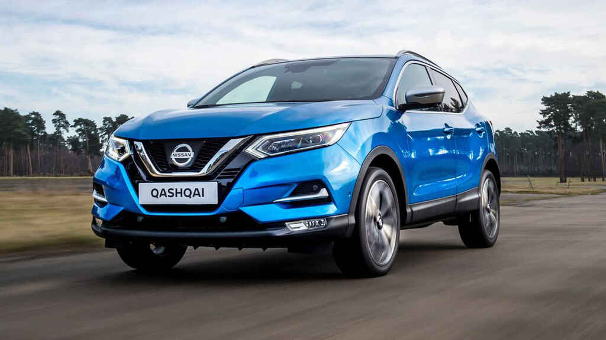
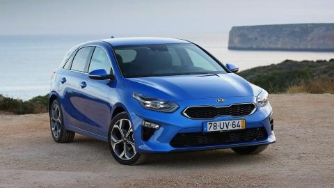
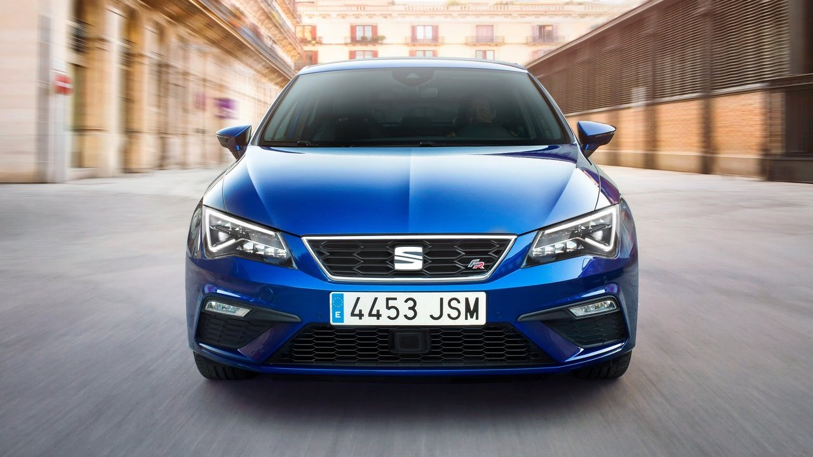

Lo más nuevo
Presentamos los nuevos coches más vendidos del momento, contamos con tres coches, concretamente con 3 tipos de coches. Desde el suv más vendido y con una de las mejores prestaciones del mercado calidad precio, como es el Nissan Qashqai, pasando por el Kia rio un utilitario con una relacion calidad precio y acabamos con el nuevo ibiza, concretamente la versión con acabado deportivo (fr).
  